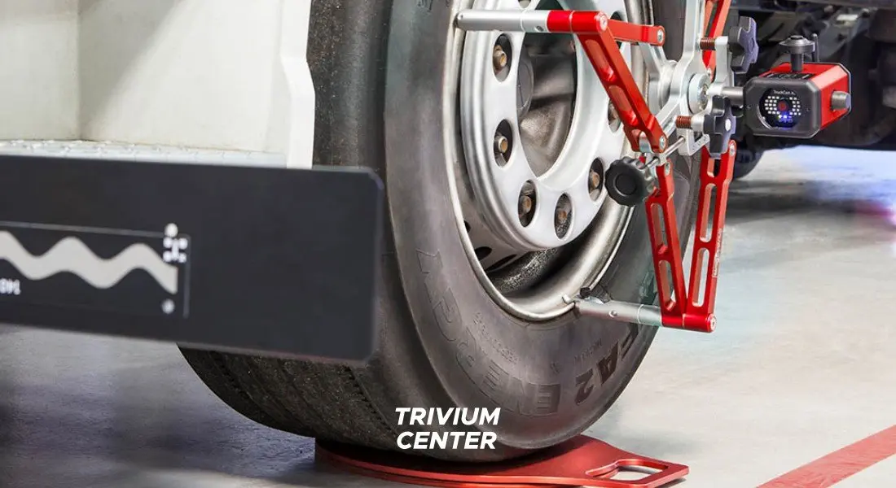

La correcta alineación de camiones es un servicio esencial para talleres y empresas de mantenimiento vehicular, ya que no solo mejora el rendimiento de los vehículos, sino que también incrementa la rentabilidad del negocio. Contar con equipos de alineación de alta precisión permite brindar un servicio profesional, eficiente y con resultados comprobables. A continuación, detallamos las principales ventajas de ofrecer este servicio y cómo nuestras máquinas pueden optimizar sus operaciones.
1. Mayor Durabilidad de los Neumáticos
Una mala alineación genera un desgaste irregular en los neumáticos, lo que obliga a reemplazarlos antes de lo previsto. Con nuestras alineadoras de última generación, los talleres pueden garantizar un ajuste preciso, extendiendo la vida útil de las cubiertas y ofreciendo un valor agregado a sus clientes.
2. Reducción del Consumo de Combustible
Los camiones con problemas de alineación enfrentan mayor resistencia al rodar, incrementando el consumo de diésel. Una alineación óptima, realizada con equipos de precisión, asegura que los vehículos circulen de manera más eficiente, ayudando a las flotas a reducir costos operativos.
3. Seguridad y Estabilidad en la Conducción
Un camión bien alineado mejora su respuesta en curvas, frenadas y condiciones adversas, disminuyendo riesgos de accidentes. Nuestras máquinas permiten ajustes milimétricos, garantizando que los vehículos cumplan con los estándares de seguridad requeridos.
4. Protección de Componentes Mecánicos
La desalineación afecta no solo los neumáticos, sino también la suspensión, dirección y transmisión. Ofrecer un servicio de alineación profesional con tecnología avanzada ayuda a prevenir fallas prematuras en estos sistemas, reduciendo costos de reparación para los clientes.
5. Incremento de la Rentabilidad del Taller
Invertir en una alineadora de camiones de alta calidad permite:
✔ Diferenciarse de la competencia al ofrecer un servicio especializado.
✔ Aumentar la cartera de clientes, especialmente flotas de transporte y empresas logísticas.
✔ Optimizar tiempos de trabajo, gracias a equipos rápidos y precisos.
¿Por Qué Elegir Nuestras Alineadoras?
Nuestras máquinas cuentan con:
✅ Sistemas de medición láser o computarizados para máxima exactitud.
✅ Compatibilidad con diferentes tipos de camiones y ejes.
✅ Software intuitivo que facilita el diagnóstico y ajuste.
✅ Soporte técnico especializado para garantizar un funcionamiento óptimo.
¿Está listo para optimizar sus servicios? Contáctenos para conocer más sobre nuestras alineadoras y cómo pueden adaptarse a sus necesidades.
![Alineadora de camiones [Modelo]](https://trivium.ar/wp-content/uploads/2024/09/alineadora-para-camiones-con-tecnologia-de-camara-josam-cv-aligner.jpg)